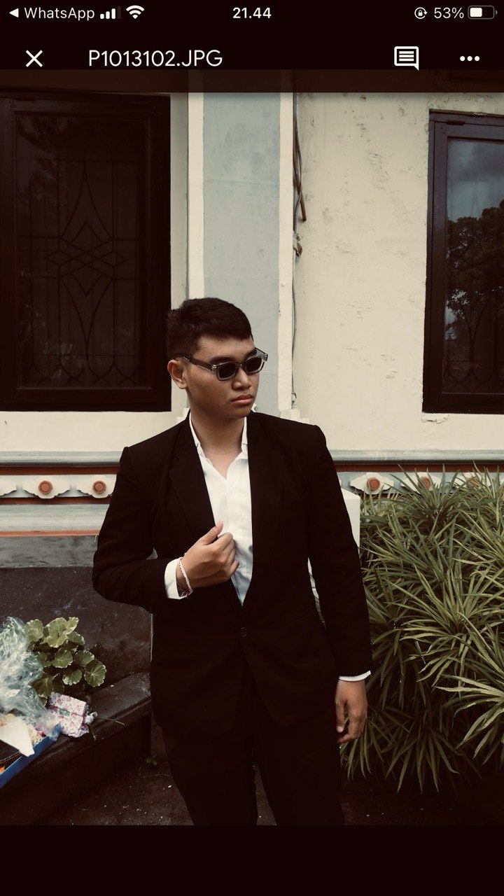
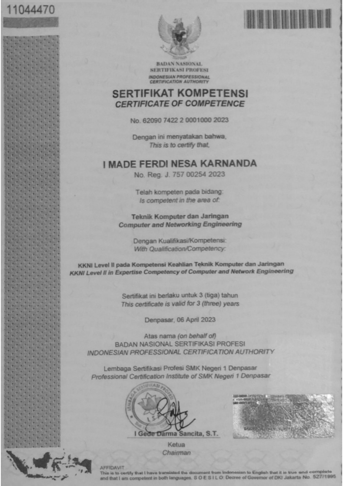

Om Swastiastu, Saya
I Made Ferdi Nesa Karnanda
Mahasiswa Sistem Komputer & IT Enthusiast
Spesialis di bidang Jaringan Komputer, Instalasi, Maintenance, dan Infrastruktur IT.

Profil Singkat
Saya adalah mahasiswa aktif di Institut Teknologi dan Bisnis STIKOM Bali, program studi Sistem Komputer.
Saya memiliki minat besar di bidang jaringan komputer dan teknologi, serta selalu bersemangat untuk mempelajari hal-hal baru. Saya terbiasa bekerja secara mandiri maupun dalam tim, serta memiliki pengalaman langsung di bidang instalasi, maintenance, dan troubleshooting perangkat jaringan maupun komputer.
Saya adalah pribadi yang disiplin, cepat belajar, dan siap menghadapi tantangan baru di dunia kerja, khususnya di bidang teknologi informasi.
Tujuan Karier
Saya ingin mengembangkan karier di bidang IT khususnya jaringan komputer dan sistem, serta terus meningkatkan kemampuan teknis agar dapat memberikan solusi terbaik dalam dunia teknologi.
Bidang Spesialisasi
Keahlian utama yang menjadi fokus dan dedikasi saya:
Networking / Jaringan Komputer
Mengelola, mengkonfigurasi, dan merancang topologi jaringan yang aman serta efisien untuk menunjang infrastruktur teknologi modern.
Troubleshooting & Maintenance
Mampu melakukan troubleshooting jaringan, monitoring performa jaringan, serta mengoptimalkan konektivitas agar sistem berjalan stabil dan minim gangguan.
Instalasi Perangkat IT
Sangat berpengalaman dalam instalasi jaringan lokal (LAN), jaringan FTTH, instalasi PC, serta perangkat EDC.
Perjalanan Karir & Proyek
Teknisi Instalasi & Maintenance EDC
PT Visionet (6 bulan)
Bertanggung jawab dalam melakukan instalasi mesin EDC di lokasi merchant (termasuk instalasi sistem operasi & aplikasi). Melakukan upgrade sistem perangkat, serta perawatan dan perbaikan mesin EDC agar berfungsi optimal.
Teknisi Jaringan Fiber Optik
PT Bali Fiber Sentra
Pengalaman instalasi jaringan FTTH (Fiber To The Home) dan maintenance jaringan fiber optik. Terlibat instalasi pipa monopole untuk jaringan wireless, serta setting dan konfigurasi Access Point.
Teknisi Komputer
PC Center Computer
Menangani instalasi jaringan lokal (LAN), service dan perbaikan PC, serta instalasi ulang sistem operasi. Melakukan refill toner dan tinta printer untuk maintenance perangkat.
Proyek & Pengalaman Teknis
Proyek Independen
Instalasi jaringan internet rumah berbasis FTTH, setup Access Point untuk area publik, instalasi CCTV untuk keamanan. Perbaikan dan upgrade komputer, serta konfigurasi jaringan sederhana menggunakan Mikrotik.
Pendidikan
S1 Sistem Komputer
Institut Teknologi dan Bisnis STIKOM Bali
S1 Sistem Komputer di ITB STIKOM Bali mempelajari integrasi perangkat keras (hardware), jaringan, dan robotika
Teknik Komputer dan Jaringan
SMK Negeri 1 Denpasar
perakitan komputer, instalasi sistem operasi, administrasi server, dan konfigurasi jaringan (LAN/WAN) menggunakan perangkat seperti Cisco/MikroTik
Sertifikasi & Penghargaan

Sertifikat Kompetensi BNSP
Teknik Komputer dan Jaringan (KKNI Level II)
Dikeluarkan oleh Badan Nasional Sertifikasi Profesi (BNSP) melalui Lembaga Sertifikasi Profesi SMK Negeri 1 Denpasar.
Hubungi Saya
Lokasi
Denpasar, Bali
Telepon / WhatsApp
0899 0353 2356
ferdiness1812@gmail.com